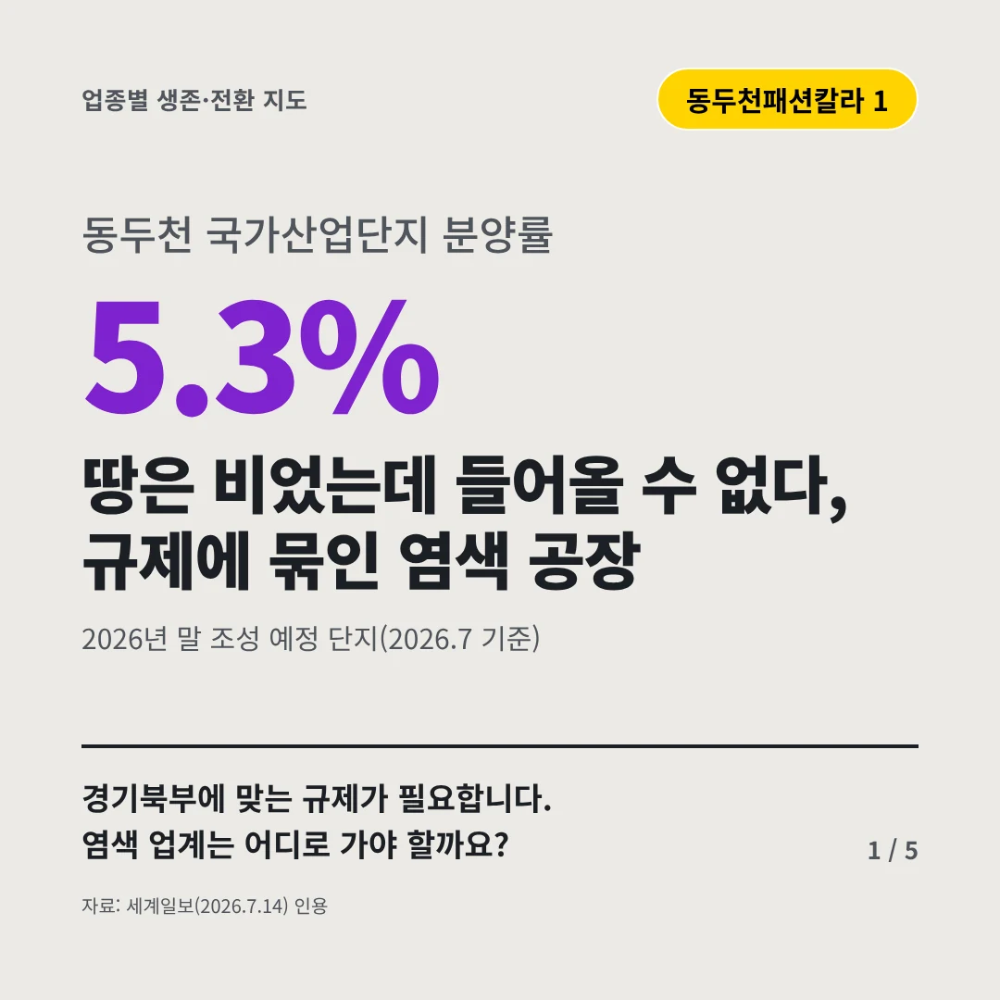
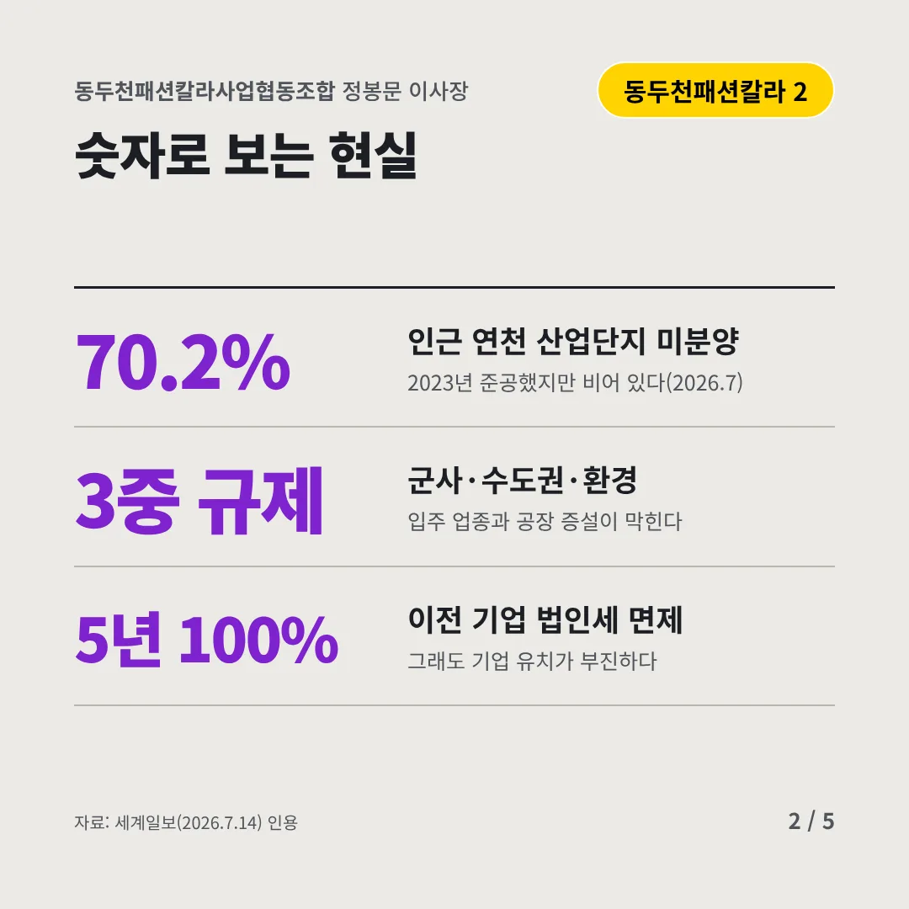
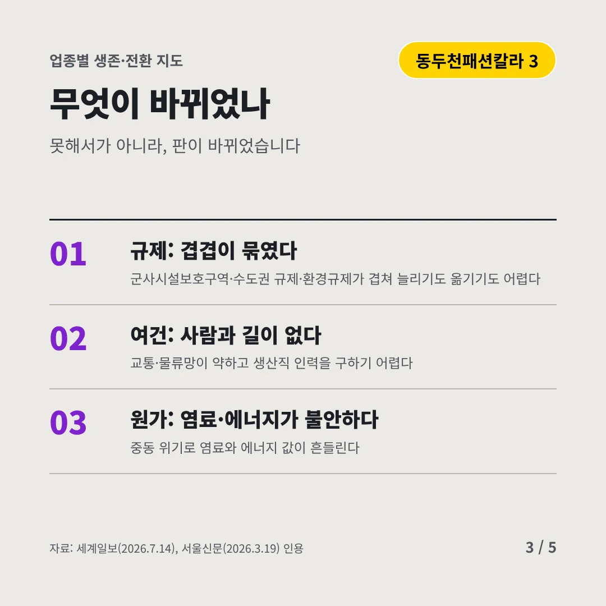
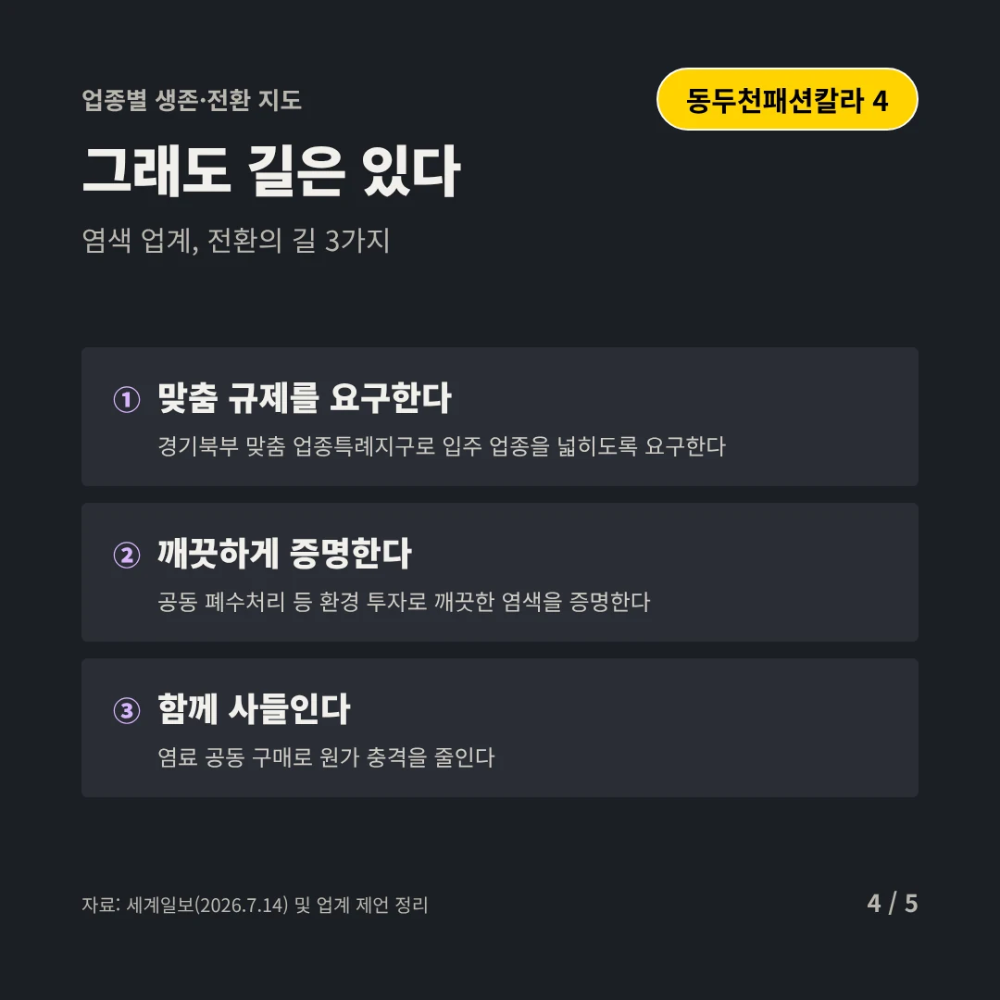
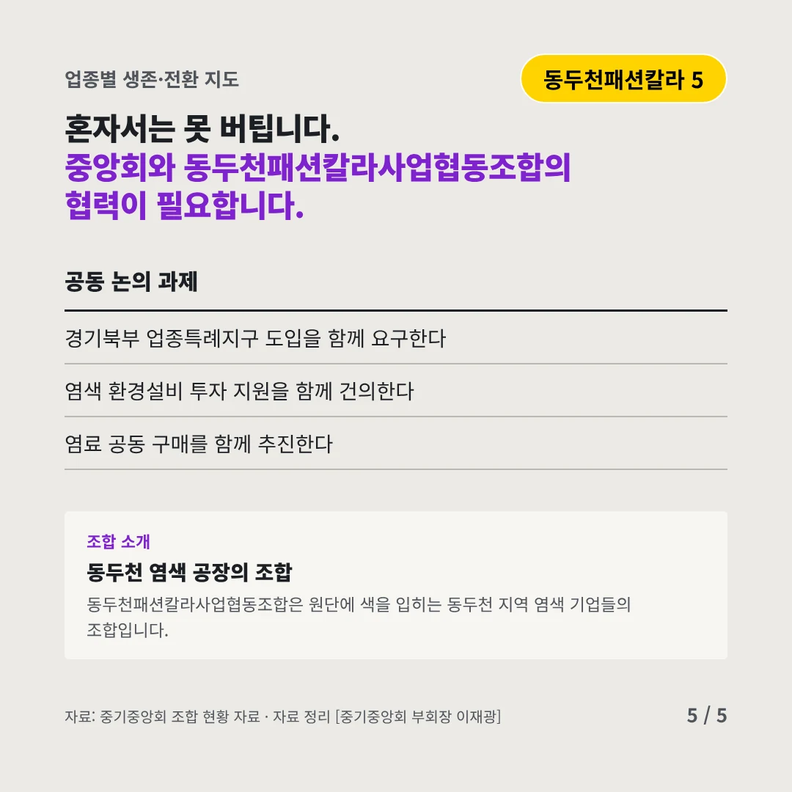
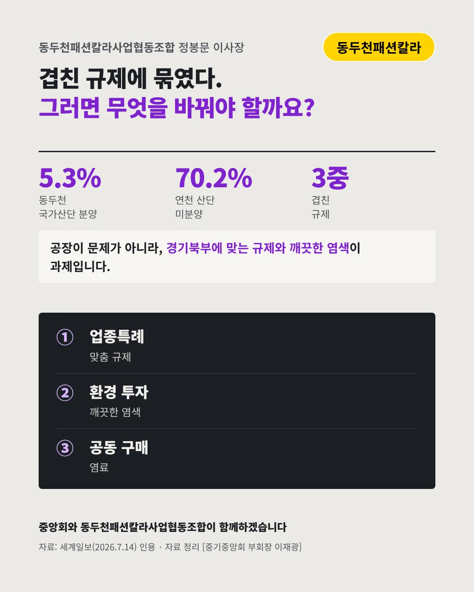

동두천패션칼라사업협동조합정봉문 이사장
땅은 비었는데 들어올 수 없다, 규제에 묶인 염색 공장
5.3% 동두천 국가산업단지 분양률






경기북부에 맞는 규제가 필요합니다. 염색 업계는 어디로 가야 할까요?
숫자로 보는 현실
- 70.2%인근 연천 산업단지 미분양2023년 준공했지만 비어 있다(2026.7)
- 3중 규제군사·수도권·환경입주 업종과 공장 증설이 막힌다
- 5년 100%이전 기업 법인세 면제그래도 기업 유치가 부진하다
무엇이 바뀌었나
- 규제: 겹겹이 묶였다군사시설보호구역·수도권 규제·환경규제가 겹쳐 늘리기도 옮기기도 어렵다
- 여건: 사람과 길이 없다교통·물류망이 약하고 생산직 인력을 구하기 어렵다
- 원가: 염료·에너지가 불안하다중동 위기로 염료와 에너지 값이 흔들린다
그래도 길은 있다
- 맞춤 규제를 요구한다경기북부 맞춤 업종특례지구로 입주 업종을 넓히도록 요구한다
- 깨끗하게 증명한다공동 폐수처리 등 환경 투자로 깨끗한 염색을 증명한다
- 함께 사들인다염료 공동 구매로 원가 충격을 줄인다
한 장 요약

조합 소개
동두천패션칼라사업협동조합은 원단에 색을 입히는 동두천 지역 염색 기업들의 조합입니다.
자료: 세계일보(2026.7.14), 서울신문(2026.3.19)